What is SmartTest?

SmartTest is a plugin developed in Pharo. It is an Add-On for Quality Assistant by Yuriy Tymchuk and provides new rules and critiques. But it has also its own implementation of feedback about testing
The goal of SmartTest is to provide to the developers the list of tests they should run after they modify their code. With this plugin installed, developers will save time and will develop in a better way (hopefully).
Installation
I supposed you have already installed Pharo. If not, please install it.
To install SmartTest. The easiest way is to use the catalog browser.
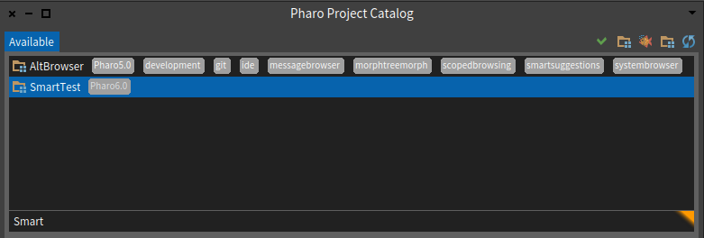
Utilisation - Reneraku Integration
Once you install SmartTest, it is auto-activated (it can take a few seconds, but you will not notice them).
You can disable this way of utilization in the setting. To do that, you only have to toggle the corresponding button in the settings.
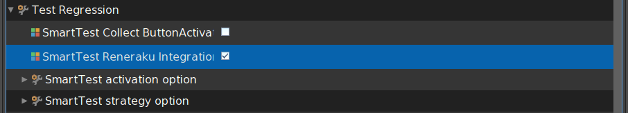
Each time you select a method or a class. Two rules can be activated.
Should write tests
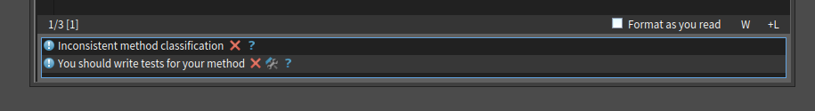
This critique indicates that the plugin didn’t find any test related to the method you’ve selected. Normally, it means you didn’t write a test for this method. So it advises you to create a test (because yes… It’s essential !!!).
If you click on the fix button, the plugin offers you to create it quickly (from a template).
Should run tests
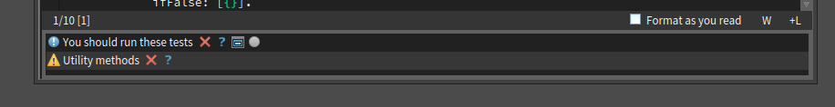
This critique indicates that the plugin has found test(s) related to the method you’ve selected. This critique offers you two new actions
- By clicking on the #testNotRun icon, the plugin will execute the tests related to the method. If there are errors or fails, the button will turn red or yellow (but the debugger will not be displayed !!!).
- By clicking on the #smallWindow icon, the plugin will open a new window with the test it’s found.
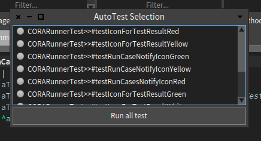
This window displays the list of tests SmartTest has found. You’re able to run each run by clicking on the #testNotRun icon. The tests will be run in debug mode (errors will be displayed). By clicking on the “Run all test” button, you will run all the tests displays in debug mode.
Options
Many options are available to custom your experience with SmartTest. You should read this part to use SmartTest at the maximum of its possibilities. You can extend each option and so create your own experience.
Enable/Disable research
You can enable or disable the research of tests for a method or for class only. To do that, you only have to toggle the corresponding button in the settings.

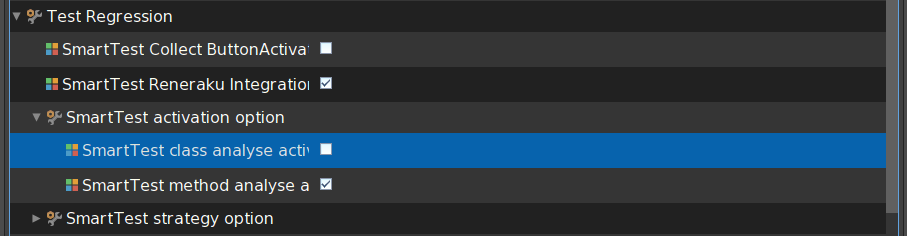
Testing strategy
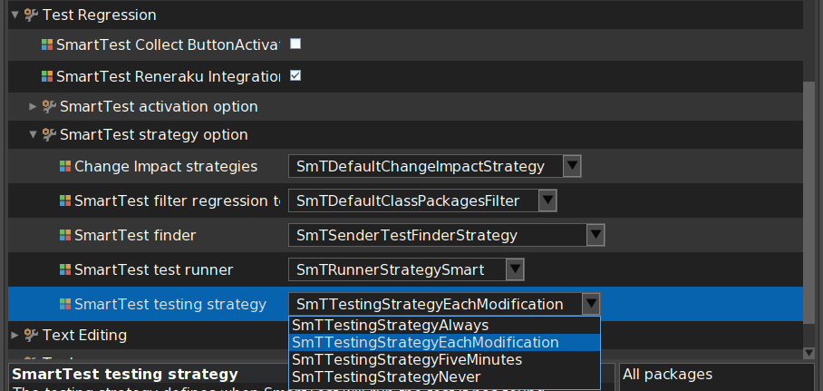
SmartTest provides four strategies for testing.
- Never will only display the button as described previously.
- Always will execute all the test SmartTest finds as soon as it finds the tests. If you change a method A then select a method B before the end of the research of relative tests, SmartTest will continue to search and run the tests as soon as it finds them.
- Every 5 Minutes will collect the tests SmartTest find during a duration of 5 minutes. Then SmartTest will run the tests and, if a test fails, SmartTest will display a window with the test suite it ran.
- Each modification will run the tests SmartTest find each time you modify your code. This is the default strategy. As for always strategy, if you change a method A and select a method B before the end of the research of relative tests, then SmartTest will continue to search and run the tests as soon as it finds them.
You’re able to extend SmTTestingStrategy if you’d like to create your own testing strategy.
Finder
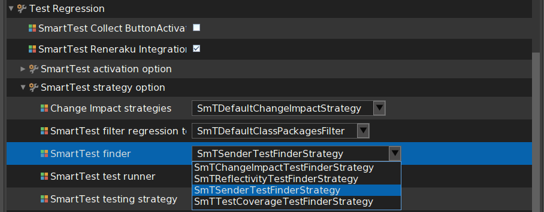
The finder contains the implementation of how SmartTest will find test relative to a method. The default will work as follow, for
- a method, it will use the current change impact strategy (see Change Impact strategy).
- a class, it will search the method that uses the variables of the class.
- a test method, it will provide the test method
- a setup, it will provide all the tests concerning by this setup
- a teardown, it will provide all the tests concerning by this teardown
Filter
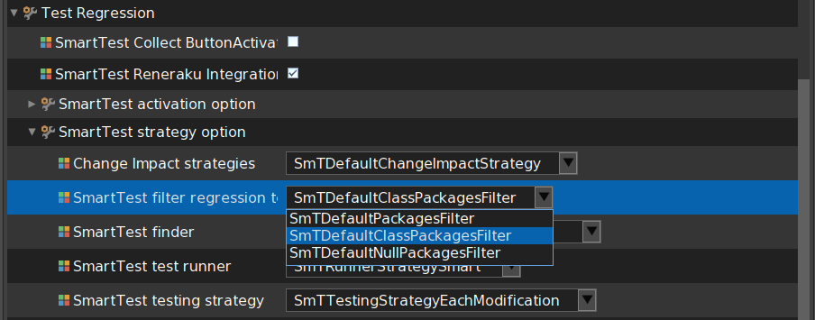
You can also define a filter for the finder strategy to optimize our tool. Currently, we are filtering test relative to the method package. That includes all the class in our package, the package with the same base name (“SmartTest-Patate” and “SmartTest-Frite-Poulet” are two packages with the same base name “SmartTest”). And the package that calls our method class (“MyClass»#hello” is in the package A. In the package B, there is at least a method that calls “MyClass”. So, the methods inside the package B are not rejected).
(working on schema)
You’re able to extend SmTFilterStrategy if you’d like to create your own strategy to filter tests.
Runner
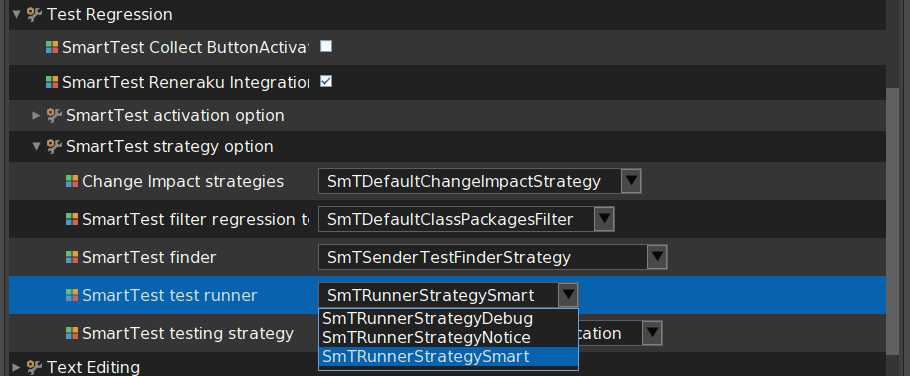
The runner is the part of SmartTest which run the tests provided by the finder. By default, the SmartRunner is used.
- If you click on “run button” of the critique, it will run the found tests and change its color depending on the result (green, yellow or red).
- On the “Run All Button” or on the method button, the test will be run in debug mode (so if they fail, or raise an error, the debugger will open).
The Debug one will open the debugger if an error appears (don’t depend on the button you click on). The notice one works as the debug one but it never opens the debugger.
Utilisation - Own implementation
You can activate the own implementation of SmartTest by enabling it in the settings menu.
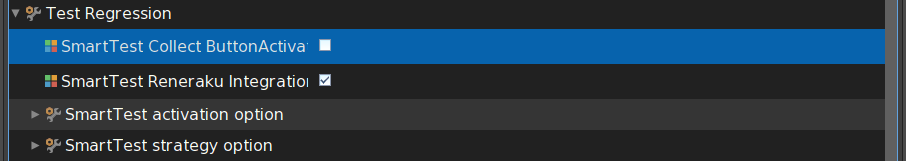
Then the Test Button will appear. Each time you modify a method. The Button will save the tests link to this method. When you click on the button, those tests are run, and the button provides you a feedback.
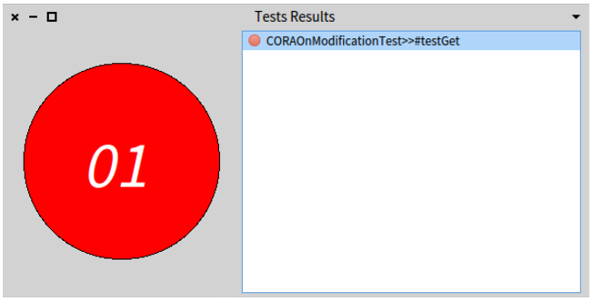
Uninstall
To uninstall SmartTest, it’s a bit hard currently. You have to follow this instruction:
- Unload SmartTest
- Run this command in a playground
ReRuleManager cleanUp - ReLoad Kernel
- Reload SUnit-Core
- Reload QualityAssistant
- Reload Nautilus
Links
The projects are present on github. So you can report issues (or features you want to see implemented). And you can do pull request too.
Development version
The best way since Pharo7 is to use iceberg !!
You can also execute this script
Metacello new
baseline: #SmartTest;
githubUser: 'badetitou' project: 'SmartTest' commitish: 'development' path: '.';
onWarningLog;
load
Publications
Conference Articles
- During the development, it is known that tests ensure the good behavior of applications and improve their quality. We studied developers testing behavior inside the Pharo community in the purpose to improve it. In this paper, we take inspiration from a paper of the literature to enhance our comprehension of test habits in our open source community. We report results of a field study on how often the developers use tests in their daily practice, whether they make use of tests selection and why they do. Results are strengthened by interviews with developers involved in the study. The main findings are that developers run tests every modifications of their code they did; most of the time they practice test selection (instead of launching an entire test suite); however they are not accurate in their selection; they change their selection depending on the duration of the tests and; contrary to expectation, test selection is not influenced by the size of the test suite.